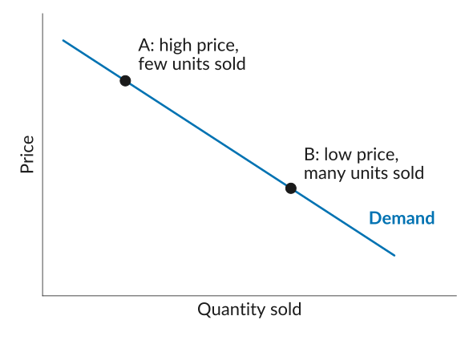
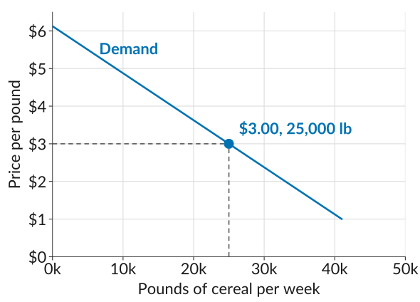

ECON 201: Principles of Microeconomics
Lecture 5
Profit is the difference between what a firm earns from selling its product and what it costs to produce that product: \[\text{Profit} = \text{Total Revenue} - \text{Total Cost}\]
| Ford | Ferrari | |
|---|---|---|
| Vehicles sold (2024) | 4.5 million | 13,752 |
| Sales | $185.0 billion | $7.2 billion |
| Profit | $5.9 billion | $1.7 billion |
| Profit as a share of sales | 3% | 23% |
Could Ford charge a 23% margin on its F-150?
Some firms are able to differentiate their product from those of their competitors: it has characteristics that customers value and believe they cannot find elsewhere. Selling a differentiated product gives a firm more control over its price.
Why does charging a high price make sense for some firms but not for others? Jot down your thoughts on the worksheet (Activity 1), then compare with a neighbor.
The demand curve shows the number of units that buyers would wish to buy at any given price.


Reading quantities off the demand curve at five candidate prices gives the schedule below. Fill in revenue, cost, and profit, draw the four curves, and decide: which price would you set?
| Price per pound, \(P\) | $3.00 | $3.50 | $4.00 | $4.50 | $5.00 |
|---|---|---|---|---|---|
| Pounds per week, \(Q\) | 25,000 | 21,000 | 17,000 | 13,000 | 9,000 |
ECON 201 · Lecture 5